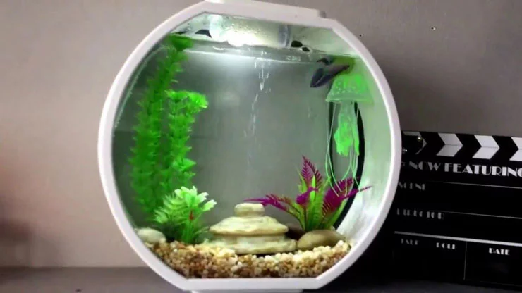
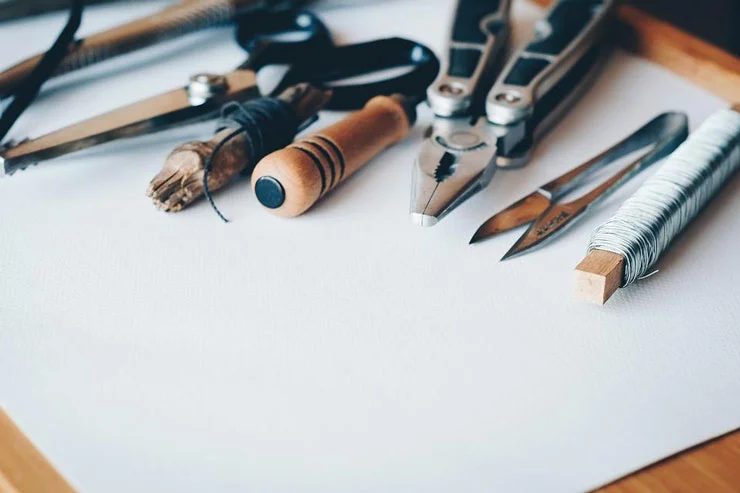
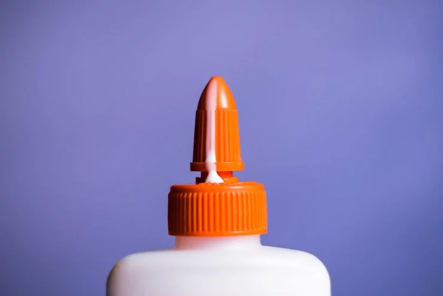
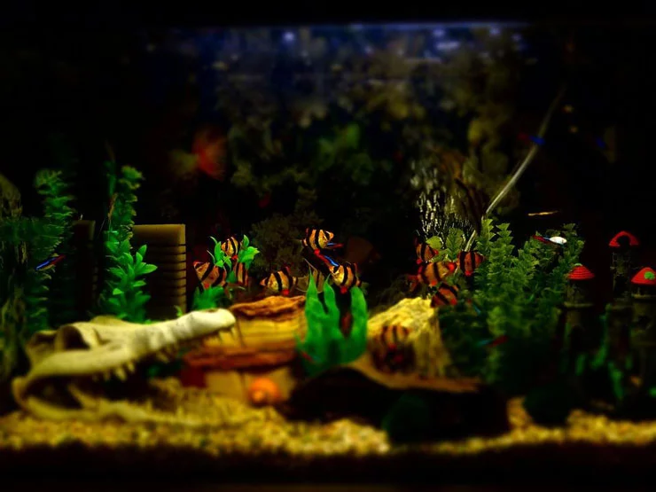
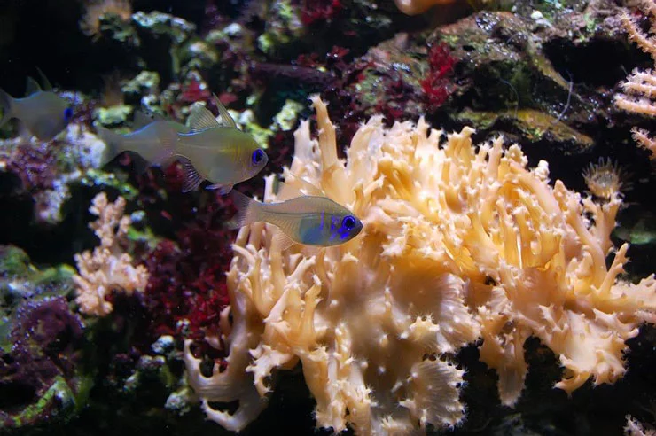

Cute Fish
Provide Live and Quality Fish
Provide Live and Quality Fish
1. Mempersiapkan alat dan bahan
Pertama-tama, alat dan bahan yang harus anda persiapkan antara lain kaca untuk dinding akuarium, silikon lem kaca sebagai bahan perekat, lakban untuk perekat sementara, tembakan lem silikon, binder clip untuk menjepit potongan kaca, dan meja datar untuk tempat merangkai kaca akuarium.
2. Memotong kaca untuk akuarium
Langkah kedua, anda harus mempersiapkan alat pemotong kaca, gerinda, kacamata, penggaris, dan spidol kecil. Letakkan lembaran kaca pada meja atau lantai yang sudah dilapisi dengan karpet kain agar permukaan rata.
Selanjutnya, buat garis menggunakan spidol dan penggaris sesuai dengan ukuran yang sudah anda sesuaikan dengan space di ruangan anda. Kemudian potong menggunakan alat potong kaca dengan lurus dan rapi. Setelah kaca terpotong semua, haluskan pinggir kaca dengan menggunakan gerinda. Jangan lupa untuk menggunakan kacamata agar percikan kaca tidak mengenai mata.
3. Mulai merangkai akuarium mini
Langkah ketiga, letakkan ukuran kaca sisi bawah di atas meja datar. Berikan lem silikon pada setiap sisi di setiap bidang pertemuan antar potongan kaca. Kemudian pasang kaca satu per satu dengan tetap memperhatikan letak di mana pertemuan kaca tersebut harus diberi lem silikon.
Setelah semua kaca terpasang, gunakan lakban untuk menjaga sambungan kaca yang belum kering tersebut. Lakban harus direkatkan secara melingkar di setiap sisi kaca agar rangkaian akuarium mini menjadi kuat.
Setelah lem mengering, oleskan lem sekali lagi ke setiap sudut pertemuan kaca agar tidak terjadi kebocoran. Gunakan binder clip untuk memasang potongan variasi kaca. Biasanya variasi diletakkan di sisi atas atau bawah akuarium.
4. Dekorasi akuarium mini
Langkah keempat yang harus anda lakukan adalah memberi hiasan pada akuarium mini yang telah anda buat. Cara menghias akuarium mini sedikit berbeda dengan akuarium pada umumnya. Anda harus menghindari penggunaan batu hias berwarna-warni ke dalam akuarium karena akan menyebabkan tumbuhnya jamur dan kotoran yang akan sulit untuk disaring dengan sempurna.
Anda juga disarankan untuk menggunakan pasir akuarium berwarna hitam agar kotoran tersamarkan. Selanjutnya, berikan hiasan karang yang indah, lampu, dan pasang aerator dengan filternya untuk menyaring kotoran dan menambah oksigen pada air.
5. Pemilihan ikan hias
Langkah terakhir, anda harus memilih ikan hias maksimal tiga jenis dengan jumlah dan ukuran yang seimbang. Jangan sampai anda terlalu banyak memasukkan ikan hias ke akuarium.
Pada tahap ini, hal yang harus anda perhatikan adalah penggunaan air yang benar-benar bersih. Sebelum ikan hias dimasukkan ke dalam akuarium mini, diamkan air selama kurang lebih satu minggu dengan menghidupkan aerator setiap harinya dengan tujuan untuk adaptasi.